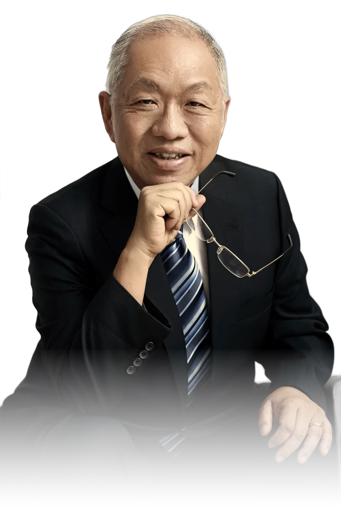

以几何，丈量宇宙的形状
有些名字刻在石头上，
有些名字刻在定理里。

他从香港的困顿少年，走到伯克利陈省身门下；用偏微分方程打开几何的大门，让一类流形以他的名字被物理学家写进宇宙的方程。
后半生，他把更多的力气放在人身上——办学、建所、带学生，为中国数学一砖一瓦地铺路。
解出复蒙日–安培方程，证明紧凯勒流形上可以预先指定里奇曲率。第一类陈类为零时便得到里奇平坦度量——后来被称为卡拉比–丘流形，也成了弦论里额外维度的候选形状。
在广义相对论中，满足能量条件的孤立引力系统总质量不为负，且只有平直时空的质量为零。他们用极小曲面方法给出了证明，用几何回答了物理问题。
里奇曲率非负的流形上，正热方程解的梯度估计。这个思路一路影响到后来的里奇流研究。
紧凯勒流形上的全纯向量丛稳定，当且仅当它存在厄米–爱因斯坦度量。这一结果把代数几何与规范场论连在了一起。
镜像对称的几何图景：卡拉比–丘流形可以看成特殊拉格朗日环面的纤维化，把纤维对偶过来，就得到它的镜像。
用偏微分方程研究几何，再用几何反过来理解方程。他是这门学科最重要的奠基人之一，培养了一代又一代几何分析学者。
留一句话，为这片几何的星空添一点光。